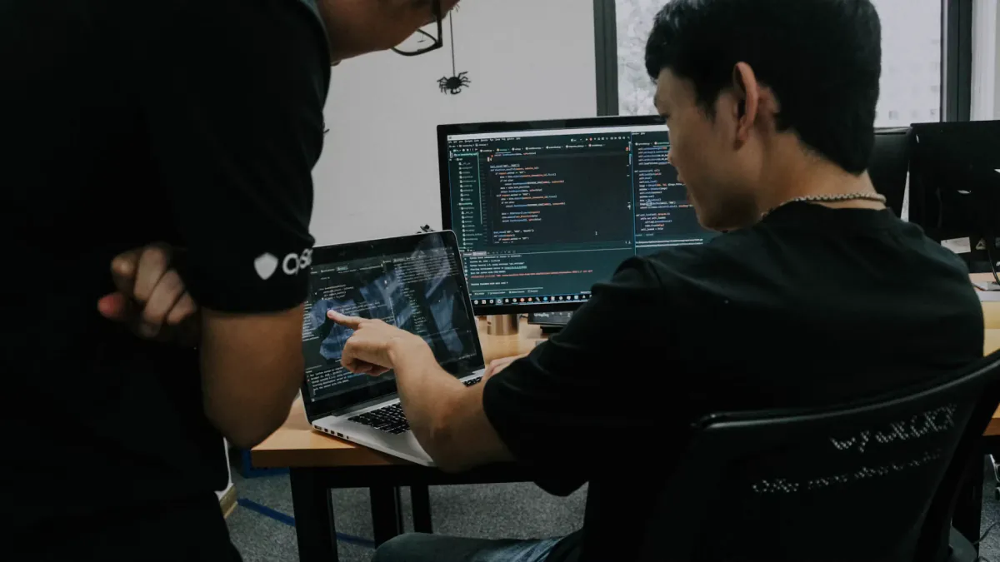

Depth where it matters. Breadth where it has to land.
Our specialists combine focused careers in AI and cybersecurity with the software, data,
architecture and delivery experience required for production systems.
We focus on
Software Engineering
From the first architectural decisions to reliable production software: engineers
who turn complex requirements into maintainable applications and services. We work
alongside your teams to build, integrate and evolve systems that stand up to
real-world use.
Custom applications, backend services and APIs
Frontend engineering and system integration
Maintainable architecture, code quality and automated testing
Modernisation, performance and long-term product development

Artificial Intelligence & Applied ML
From applied research to production: model selection, evaluation harnesses,
retrieval and agent architectures, MLOps and the governance that lets you actually
deploy. Specialists who've shipped models, not just slide decks about them.
LLM systems, RAG, agents and evaluation pipelines
Applied ML, forecasting, computer vision, recommender systems
MLOps, model lifecycle and platform engineering
EU AI Act readiness, model risk and assurance
Cybersecurity & Resilience
Offensive, defensive and governance work, run by specialists with the credentials to
operate in regulated and cleared environments. We secure what we build and break
what needs breaking — both with the same seriousness.
Red teaming, penetration testing, threat modelling
Cloud and identity security, zero-trust architecture
The foundation your systems depend on — robust platforms, infrastructure and data
environments built for reliable operations and room to grow.
Data platforms
Infrastructure
Platform engineering
Cloud & Devops
From cloud architecture to everyday delivery — automated environments, dependable
release pipelines and operational visibility that keep teams moving safely.
Cloud
CI/CD
Infrastructure as code
Observability
Software Verification & Validation
Confidence that your software does what it should — engineers who translate
requirements into evidence through rigorous verification, validation and automated
testing.
Custom software
Verification & validation
Test automation
Quality assurance
Architecture & Technical Advisory
Independent senior architects for the moments that matter — vendor selection, target
architecture, second opinions on the proposal already on your desk.
Target arch
Vendor review
Second opinion
Project & Interim Management
Senior delivery and interim leads who hold the line on scope, risk and timeline — and
step into the role itself when you need it filled now.
Delivery lead
Interim roles
PMO
Selected work
LLM evaluation harness past demo stage
Constraint
Model updates reached production without a dependable regression signal.
Architecture
Versioned eval sets, automated scoring and CI release gates.
Verified result
Failures caught before customer workflows.
Detection-as-code in a regulated environment
Constraint
Detection logic drifted across tools, owners and audit cycles.
Architecture
Reviewable detection repository, test fixtures and deployment pipeline.
Verified result
Faster change control and defensible coverage.
Production foundation for applied ML
Constraint
Fragmented pipelines blocked repeatable model delivery.
Architecture
Governed feature pipelines, observability and paved-road deployment.
Verified result
Shorter path from experiment to controlled release.
Load more
Cloud platform modernization at scale
Constraint
Legacy services and inconsistent environments slowed secure delivery across
teams.
Architecture
A modular cloud platform with automated controls, reusable deployment paths
and clear ownership.
Verified result
Safer releases, lower operational friction and a platform teams could extend.
Straight answers to the questions we hear most.
What kind of expertise do you cover?
AI and cybersecurity are our two practice areas. Around them we keep deep benches
in data, platform and software engineering, plus independent senior architects. If
your problem is in those zones and you need a recognised specialist, we can help.
How do you choose the consultants in your network?
A partner intro call, two technical references we actually call, and proof of
shipped specialist work — papers, talks, CVEs, production systems they led. We
stay small on purpose: the bar is what makes the network valuable to clients.
How do you price?
Specialist time-and-materials with a clear scope and ceiling is our default. Fixed
price for well-defined deliverables. Either way, you see the consultant's rate,
our margin, and what the work actually costs. No tier games.
Do you work on-site? Cleared environments?
Yes — we expect to be on-site for at least part of every engagement. A meaningful
share of our cybersecurity and AI work is in regulated, sensitive or cleared
environments; background checks, NDAs and signed access agreements are routine.
Who owns the code, models and findings?
You do, always. Source, infra-as-code, model artefacts, evaluation suites,
security findings and reports — delivered into your repos and your accounts as
part of the engagement, not at the end.
Will I get the named specialist, or someone behind them?
The named one. Profiles are real; we don't run a pyramid. If the consultant you
met in the pitch can't continue for any reason, we tell you immediately and you
choose the replacement — not us.
Not covered here? A short call will tell you if we're the right fit.